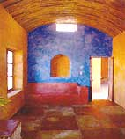

Step 1 MAKING A STARCH PASTE
Add 1 part white flour to 2 parts cold water, and set aside. Boil 1 1/2 parts water. When boiling, add the above mixture of flour and cold water.
Turn heat to low, continue to cook until the mixture thickens. Continually stir the bottom to prevent burning.
Step 2 MAKING THE PAINT
For every 1 part starch paste, dilute with 2 parts water. That will make the paste liquid enough to permit adding the other ingredients.
Next, add enough colored clay or white kaolin clay with pigments to achieve a consistency that will spread easily with a brush. It is difficult to describe, but we look for a mixture that will cover in two coats. The right consistency will be like thick cream. Mica can be added to simulate clays that have naturally occurring mica. Fine (screened) chopped straw can also be added. If adding either or both, add less clay since the mica and straw will also thicken the mix.
Step 3 APPLICATION AND POLISHING
Apply with a brush; when the paint has set but is still moist, use a damp (not wet) tile sponge to polish the surface, removing excess dust and revealing the straw and mica. A plastic lid with the edges cut off can also be used as a flexible scraper to further polish the surface.
|
 |
|
|